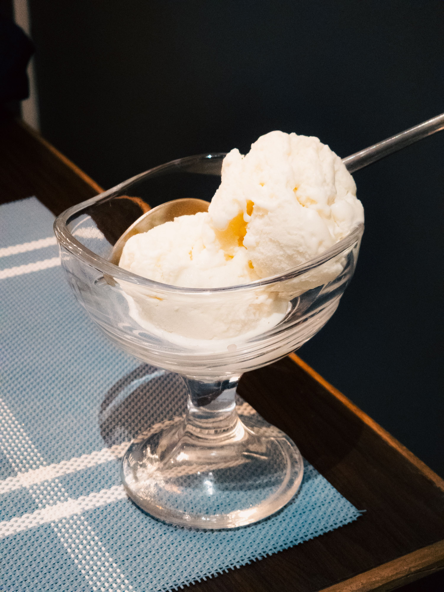

Vanilla Ice Cream

This homemade ice cream is easy to make with just 4 ingredients: pure vanilla extract, milk, heavy cream, and sugar. This American or Philadelphia-style ice cream makes for a brighter, more pronounced vanilla flavor.
Ingredients:
- 2 ¼ cups milk
- 1 cup heavy cream
- ¾ cup white sugar
- 2 teaspoons pure vanilla extract
Steps:
- Gather all ingredients.
- Stir milk, cream, and sugar together in a saucepan over low heat until sugar has dissolved; heat just until hot and a small ring of foam appears around the edge.
- Transfer cream mixture to a pourable container such as a large measuring cup; stir in vanilla extract. Chill cream mixture thoroughly, 2 hours to overnight.
- Pour cold cream mixture into an ice cream maker and freeze according to manufacturer's instructions, 20 to 25 minutes.
- Serve ice cream immediately when softly frozen or place a piece of plastic wrap directly onto ice cream and place in the freezer to firm and ripen, 2 to 3 hours.
- Serve and enjoy!
Home